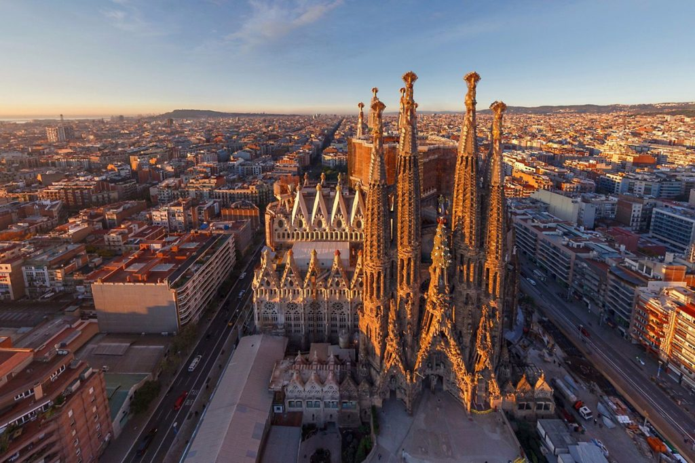

Чому саме Барселона?
Барселона — яскрава столиця Каталонії на узбережжі Середземного моря. Це місто з приголомшливою модерністською архітектурою, відомим футбольним клубом та теплою середземноморською культурою.

Головні пам'ятки:
- Храм Святого Сімейства (Саґрада Фамілія)
- Парк Ґуель
- Вулиця Ла Рамбла
- Готичний квартал (Barri Gòtic)